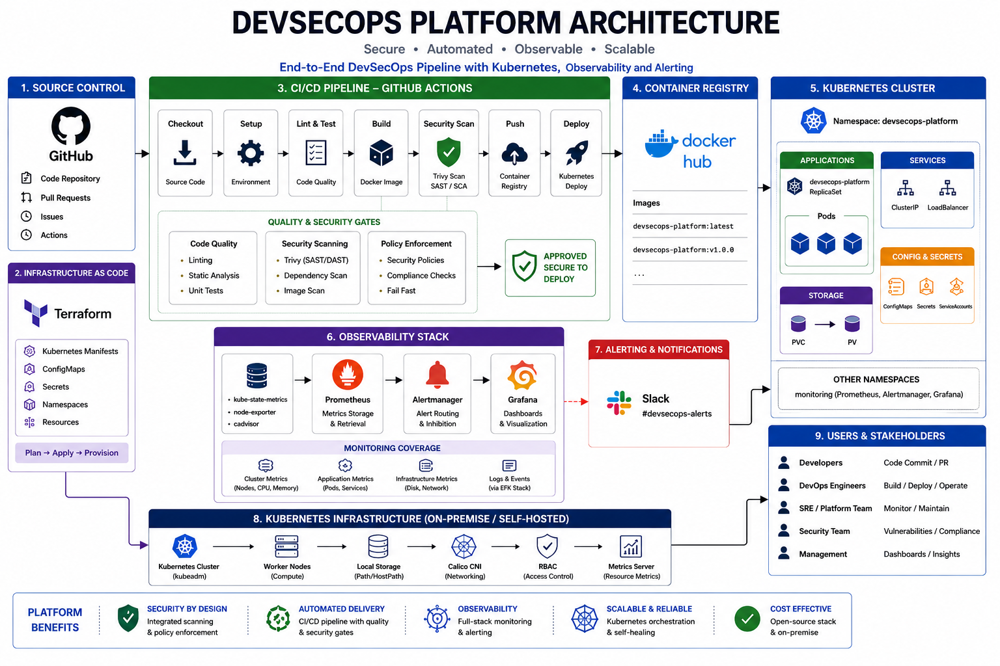
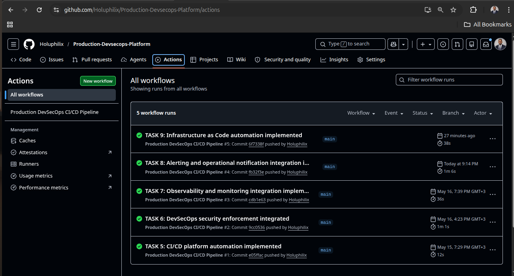
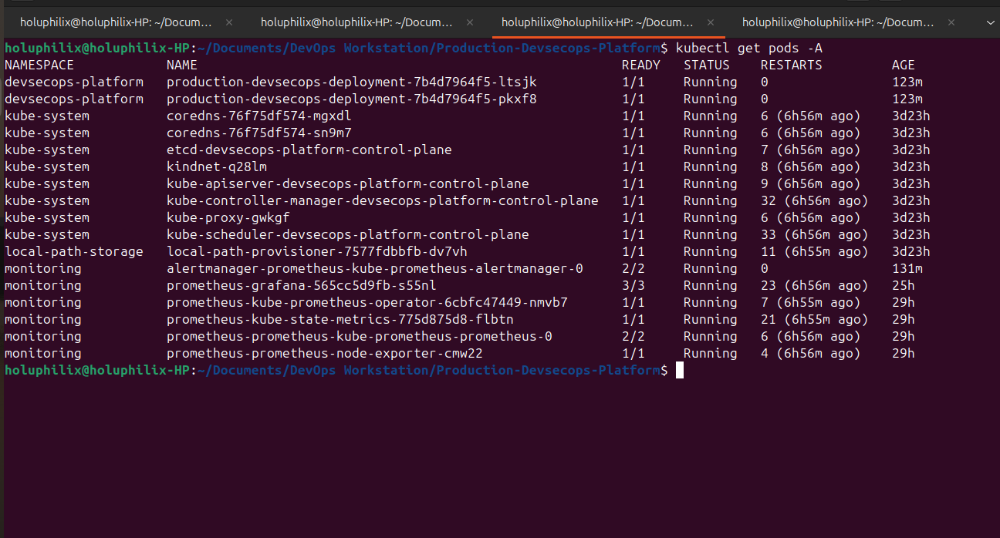
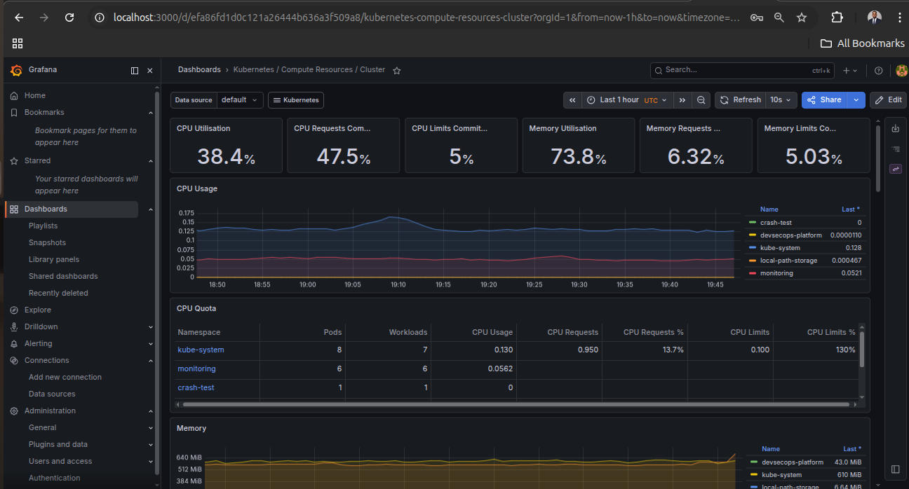
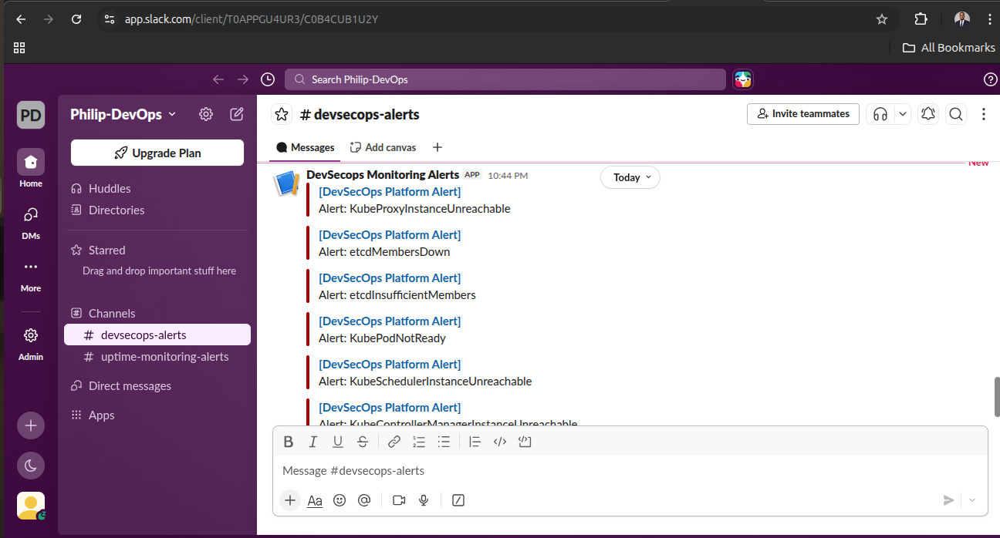
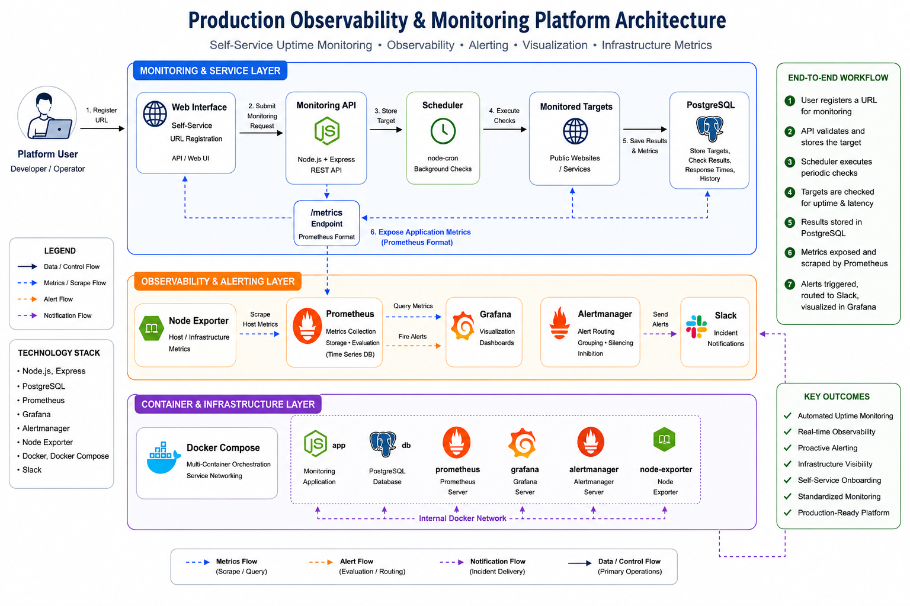
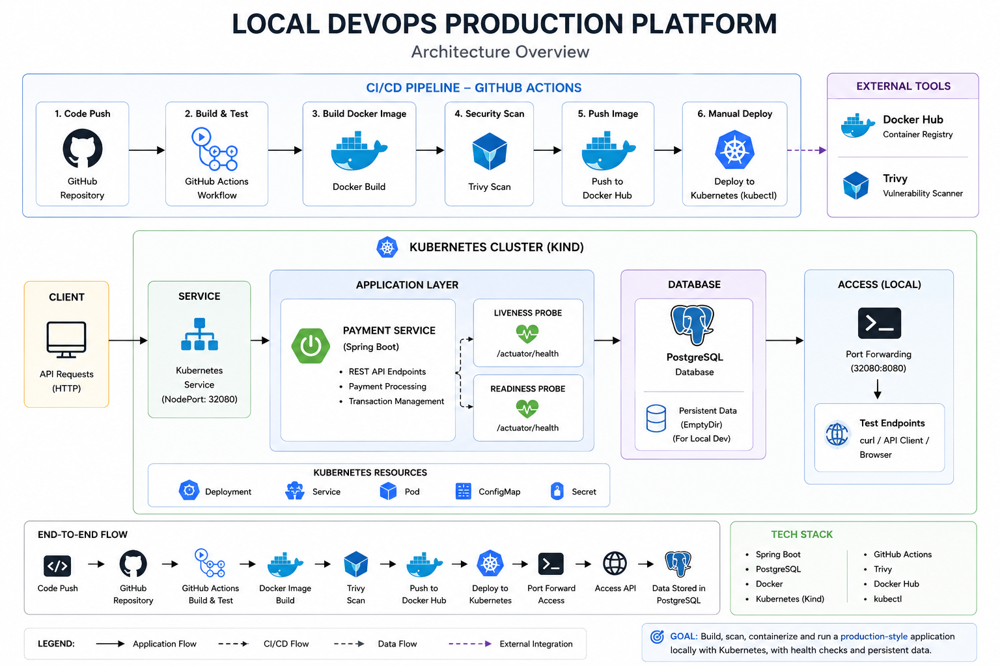
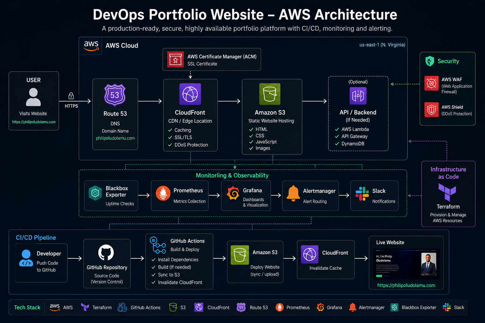

Built around Kubernetes orchestration, container runtime standardization, namespace isolation, service exposure, and operational validation.
Open to USA, Canada, UK & Europe remote DevOps engineering roles
DevOps Engineering • Runtime Operations • Observability
I build secure, observable cloud delivery platforms for production-grade DevOps.
I engineer Kubernetes workloads, GitHub Actions pipelines, Terraform automation, and monitoring systems that turn deployment activity into reliable production operations.
DevOps candidate snapshot
DevOps engineer with proven delivery automation, runtime visibility, and operational resilience experience.
8+
platform systems delivered
70%
reduced manual release effort
1 min
alert detection & response
Kubernetes
Self-hosted orchestration and workload operations
DevSecOps
Pipeline validation, scanning, and secure delivery workflows
Observability
Prometheus, Grafana, Alertmanager, and Slack alerting
IaC
Terraform-driven infrastructure automation and repeatability
CI/CD workflows integrate secret detection, IaC validation, container scanning, and controlled deployment stages before workload promotion.
Monitoring and alerting workflows connect Prometheus metrics, Grafana dashboards, Alertmanager routing, and Slack operational notifications.
Platform operating capabilities
Operational Capabilities
I focus on the engineering systems that move software from source control to validated runtime operations with visibility, security, and repeatability.
- Runtime Orchestration Kubernetes workload scheduling, service exposure, namespace isolation, and runtime health validation.
- Delivery Automation CI/CD workflows that standardize build, scan, deploy, and verification paths across environments.
- Operational Visibility Prometheus metrics, Grafana dashboards, alert routing, and Slack notifications for production awareness.
- Infrastructure Standardization Terraform-driven infrastructure lifecycle management with repeatable, reviewable platform changes.
- Platform Reliability DevSecOps validation, controlled rollout thinking, and operational checks that reduce deployment risk.
About Me
I design and automate cloud-native platform systems that help teams release reliably, reduce manual work, and operate with measurable visibility.
My hands-on work centers on self-hosted Kubernetes engineering, Terraform-based infrastructure automation, containerized delivery workflows, CI/CD orchestration, and observability systems that connect source control to validated runtime operations. I focus on building repeatable systems that reduce operational friction, improve release confidence, and make production behavior easier to inspect.
Across platform and monitoring projects, I combine orchestration, security validation, metrics collection, alerting workflows, uptime monitoring, and infrastructure automation. I am looking for DevOps, cloud, and platform engineering roles where I can strengthen infrastructure, improve delivery workflows, and support operationally reliable systems at scale.
Platform Scope
Kubernetes runtime operations, delivery automation, and infrastructure lifecycle workflows.
Operating Model
Build, secure, deploy, observe, alert, operate, and improve as one connected system.
Engineering Bias
Architecture evidence, runtime validation, and operational feedback over tool-list presentation.
Core Skills
A practical toolset shaped by hands-on cloud, platform, and delivery projects.
Cloud & Infrastructure
AWS
Self-Hosted Infrastructure
EC2
ECS
EKS
VPC
Load Balancer
Auto Scaling
Containers & Orchestration
Docker
Kubernetes
Helm
Kustomize
Kind
kubeadm
ArgoCD
CI/CD & Automation
Git
GitHub Actions
Jenkins
CI/CD Pipelines
Release Validation
Shell Scripting
Infrastructure as Code
Terraform
Modular Architecture
Platform & Delivery
S3
CloudFront
ECR
NGINX
Static Hosting
Platform Workflows
Security & DevSecOps
Trivy
Gitleaks
Checkov
Security Scanning
Monitoring & Observability
Prometheus
Grafana
Alertmanager
Node Exporter
Blackbox Exporter
Slack Alerts
Systems & Scripting
Linux
Bash
Flagship platform engineering case study
Production-Grade DevSecOps CI/CD Platform
A self-hosted cloud-native platform that integrates secure delivery, Kubernetes orchestration, infrastructure automation, runtime observability, and operational alerting into one production-style engineering ecosystem.
Code
Build
Secure
Deploy
Observe
Alert
Operate
Improve

Self-hosted platform
View Platform Repository
Designed as a complete operating path from code change to production signal.
This platform shows how delivery automation, runtime orchestration, security gates, infrastructure lifecycle management, monitoring, and alerting reinforce each other inside a cloud-native operating model.
Runtime Layer
Kubernetes workload operations, service exposure, namespace isolation, and pod validation.
Delivery Layer
GitHub Actions coordinates build, security validation, image handling, and deployment verification.
Security Layer
Gitleaks, Checkov, and Trivy provide secret, IaC, and container vulnerability visibility.
Operations Layer
Prometheus, Grafana, Alertmanager, and Slack turn runtime telemetry into actionable signals.
Build & Validate
Pipeline execution verifies source changes, delivery stages, infrastructure configuration, and deployment readiness.
Secure the Path
Secret detection, IaC scanning, and container vulnerability checks add security feedback before runtime promotion.
Orchestrate Runtime
Kubernetes manages workload scheduling, namespace boundaries, service exposure, and runtime recovery behavior.
Observe & Alert
Prometheus and Grafana expose platform health while Alertmanager and Slack support operational response workflows.
Operational Validation Evidence
Real platform screenshots showing delivery automation, Kubernetes runtime state, dashboard telemetry, and alert delivery.




Engineering reasoning
Platform decisions with operational impact
I document not just what I built, but why: secure delivery choices, runtime resilience trade-offs, and observability signal design.
Keyless AWS deployment and IaC validation
GitHub Actions, OIDC, Trivy, Checkov, and Gitleaks enforce secure release paths while keeping deployments repeatable and reviewable.
Metrics, alerts, and runtime visibility
Prometheus, Grafana, Alertmanager, and Slack notifications turn hidden production signals into concrete operational actions.
Control, scale, and reliability
Self-hosted Kubernetes and Terraform infrastructure balance platform flexibility with production-grade reliability and deployment discipline.
See the architecture decisions and platform trade-offs that shaped these systems.
Review engineering storiesEngineering writing
Real DevOps decisions I made
Each post explains a concrete choice, the alternatives I rejected, and the operational result delivered.
Why GitHub Actions with OIDC was the right path
Choosing keyless AWS deployment eliminated static credentials, reduced risk, and simplified secret management for every pipeline run.
- Decision: OIDC over long-lived AWS keys
- Trade-off: more setup versus stronger runtime security
- Result: safer CI/CD delivery and easier auditability
Balancing scan coverage with release velocity
I chose incremental DevSecOps gates so critical issues are caught early without blocking every unchanged build.
- Decision: targeted IaC and container checks
- Trade-off: deeper validation versus acceptable pipeline time
- Result: faster pushes while preserving security signal
Why external probes matter for production confidence
Adding Blackbox Exporter gave me real uptime evidence beyond internal runtime metrics and exposed real user-facing availability gaps.
- Decision: external monitoring in addition to Prometheus
- Trade-off: more infrastructure versus stronger availability insight
- Result: uptime alerts that reflect real end-user experience
These posts showcase how I turn DevOps strategy into concrete, measurable engineering choices.
View related case notesFeatured Projects
Selected systems showing how infrastructure automation, runtime operations, observability, and deployment workflows connect across a broader platform engineering practice.
Production-Grade DevSecOps CI/CD Platform
Engineered a self-hosted platform that integrates CI/CD orchestration, Kubernetes workload management, Terraform workflows, security validation, observability dashboards, alert routing, and Slack notifications into one operational delivery ecosystem.
Key Results
- Reduced release toil by ~65% with GitHub Actions, Terraform, Docker, Kubernetes, Gitleaks, Checkov, and Trivy
- Cut deployment drift by 90% with infrastructure-as-code and consistent environment validation checks
- Enabled <1-minute incident detection with Prometheus, Grafana, Alertmanager, and Slack escalation workflows
- Delivered a reproducible platform record with architecture diagrams, validation evidence, and operational dashboards

Production-Grade Observability & Uptime Monitoring Platform
Engineered a self-service monitoring platform that turns uptime checks, latency signals, persistent monitoring data, alert rules, dashboards, and Slack notifications into a repeatable operational visibility workflow.
Key Results
- Engineered a self-service onboarding workflow that reduced manual monitoring setup effort by ~80% for new targets
- Containerized the full monitoring stack with Docker Compose to standardize deployment across the API, database, Prometheus, Grafana, and Alertmanager
- Implemented uptime, latency, and health alerting with Prometheus, Alertmanager, and Slack, enabling issue detection in about 1 minute
- Centralized operational visibility through PostgreSQL-backed monitoring data and Grafana dashboards for uptime, response time, and failed-check trends

Local DevOps Production Platform
Engineered a local platform environment that standardizes containerized application delivery, Kubernetes workload orchestration, CI/CD validation workflows, runtime health management, and PostgreSQL-backed service operations into a repeatable development and deployment pipeline.
Key Results
- Standardized Spring Boot application packaging and runtime configuration with Docker, reducing local environment provisioning overhead by ~50% across deployment iterations
- Orchestrated application and database workloads on Kubernetes (Kind) using Deployments, Services, liveness probes, and readiness validation to improve runtime stability and operational consistency
- Integrated GitHub Actions and Trivy into the delivery workflow to automate build validation, container vulnerability scanning, and Docker image publication, reducing manual release operations by ~60%
- Validated platform behavior through Kubernetes health checks, port-forward testing, API verification, and runtime troubleshooting workflows to strengthen deployment reliability and operational visibility

Production-Style DevOps Portfolio Platform
Operated this portfolio as a production-style web platform with automated delivery, Terraform-managed infrastructure, CDN-backed HTTPS routing, probe-based monitoring, Grafana dashboards, and Slack alerting.
Key Results
- Automated deployments from GitHub to AWS, reducing manual release effort by ~70% and improving delivery consistency
- Provisioned HTTPS, CDN delivery, and domain routing as code with Terraform, CloudFront, ACM, and Namecheap
- Implemented dashboards, website probes, and Slack alerting, enabling issue detection and notification in about 1 minute
- Centralized delivery, observability, and documentation in one repository to improve visibility across uptime, latency, CPU, and memory metrics

Containerized Web App Deployment on AWS ECS with Terraform
Standardized a containerized application release path on AWS ECS by combining Terraform-managed infrastructure, registry workflows, Fargate runtime configuration, and repeatable deployment operations.
Key Results
- Provisioned networking, registry, and compute as code, reducing environment setup time by ~60%
- Published Docker images to Amazon ECR to standardize container packaging and deployment flow
- Deployed services on ECS Fargate without managing servers, improving scaling simplicity and operational efficiency

Scalable WordPress Deployment on AWS with Terraform
Designed an AWS application platform with Terraform-managed networking, load balancing, autoscaling, shared storage, and database layers to demonstrate resilient infrastructure composition.
Key Results
- Provisioned ALB, Auto Scaling, EFS, and RDS into one highly available architecture for stronger fault tolerance
- Automated environment build with Terraform, reducing rebuild time by ~65% and improving repeatability
- Segmented networking with public and private subnets to strengthen security and operational separation

Kubernetes Configuration Management with Kustomize & GitHub Actions
Organized Kubernetes configuration as version-controlled environment overlays, then automated rollout paths through GitHub Actions to reduce configuration drift and improve deployment consistency.
Key Results
- Automated manifest rollouts from GitHub, reducing manual deployment steps by ~60%
- Separated dev, staging, and production configuration cleanly with Kustomize overlays
- Improved release consistency and reduced configuration drift across environments

CI/CD Pipeline with Jenkins, Helm & Amazon EKS
Integrated Jenkins pipeline automation, Helm release packaging, and Kubernetes deployment operations to model controlled application promotion into an EKS runtime environment.
Key Results
- Automated build and release stages with Jenkins and Helm, reducing deployment time by ~55%
- Packaged Kubernetes releases as Helm charts to simplify upgrades, rollback workflows, and version control
- Deployed workloads to Amazon EKS through a consistent, repeatable pipeline

MarketPeak E-Commerce Deployment on AWS
Managed an EC2-hosted application environment through Linux service administration, deployment validation, and troubleshooting workflows that strengthen core cloud operations discipline.
Key Results
- Provisioned and configured an EC2-hosted application environment for reliable web delivery
- Executed Linux-based deployment and service management tasks, improving operational efficiency by ~40%
- Strengthened troubleshooting and administration workflows for application hosting on AWS

Containerized Application Deployment with Docker & Kubernetes
Connected image packaging, local orchestration, service exposure, and runtime validation into a compact Kubernetes workflow for understanding container-based platform operations.
Key Results
- Built reusable Docker images to standardize application packaging and runtime behavior
- Deployed services to Kubernetes with Kind, reducing local environment setup overhead by ~50%
- Validated container-based release workflows for local orchestration and testing
Explore the broader repository history for additional infrastructure automation, delivery engineering, and cloud operations work.
View More on GitHubEngineering roadmap
Next Platform Focus
I am extending the same operating model into stronger platform guardrails, deeper Kubernetes operations, and more reusable reliability patterns.
Kubernetes Runtime Operations
Refine workload recovery, health checks, namespace boundaries, and deployment validation patterns.
Reusable Platform Workflows
Convert delivery, scanning, deployment, and monitoring practices into repeatable platform templates.
Reliability Feedback Loops
Improve alert quality, dashboard signal design, incident visibility, and operational response workflows.
Operational engineering mindset
Engineering Principles
Production Awareness
I evaluate systems by how they behave after deployment: visibility, recoverability, failure signals, and operational clarity.
Infrastructure Discipline
I use automation and infrastructure-as-code to keep environments repeatable, reviewable, auditable, and easier to maintain.
Systems Thinking
I connect delivery, security, runtime, monitoring, and alerting as one operating system rather than isolated tools.
Continuous Improvement
I use observability evidence and operational feedback to refine deployment paths, platform guardrails, and reliability workflows.
Engineering profile
Resume & Experience
A concise profile of platform engineering, infrastructure automation, observability systems, DevSecOps delivery, and cloud-native reliability work.
Platform engineering profile
Download My Resume
Access a concise CV covering Kubernetes operations, infrastructure automation, CI/CD systems, observability platforms, DevSecOps workflows, and production-style cloud engineering projects.
- Designed production-grade DevSecOps platforms with secure delivery and runtime observability.
- Reduced release effort and improved deployment consistency through GitHub Actions and Terraform automation.
- Built operational evidence with monitoring dashboards, alert workflows, and platform validation checks.
Platform Engineering
Kubernetes Operations
Infrastructure Automation
Observability Systems
DevSecOps Delivery
Reliability Workflows
Looking for a platform-minded DevOps Engineer with Kubernetes, Terraform, CI/CD, observability, and operational reliability experience? Let’s connect.
Let’s Build Scalable Systems Together
I’m open to DevOps Engineer, Cloud Engineer, and platform-focused roles where I can automate infrastructure, improve secure delivery workflows, strengthen Kubernetes operations, and build observable systems.
You can also download my resume directly from the section above.